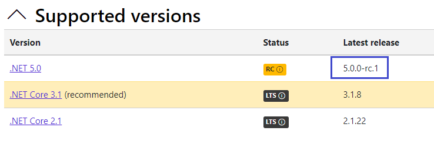
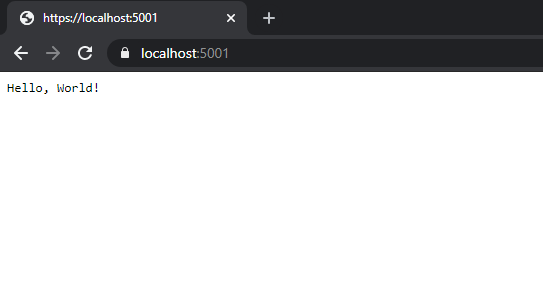
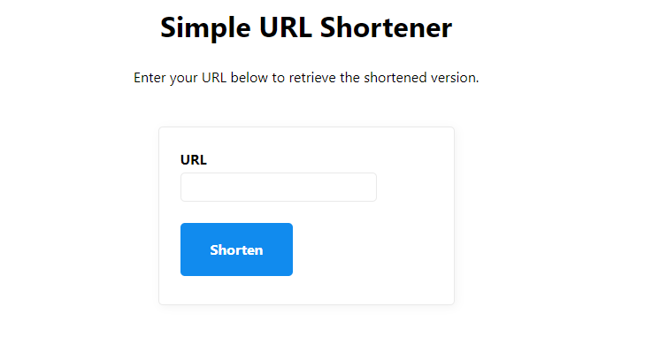
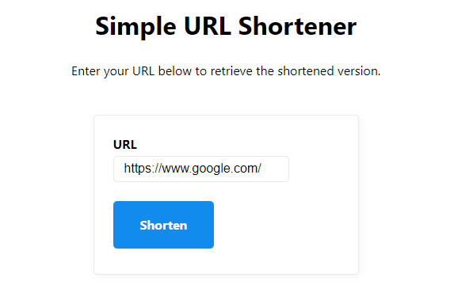
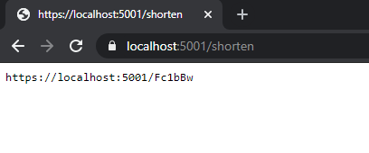
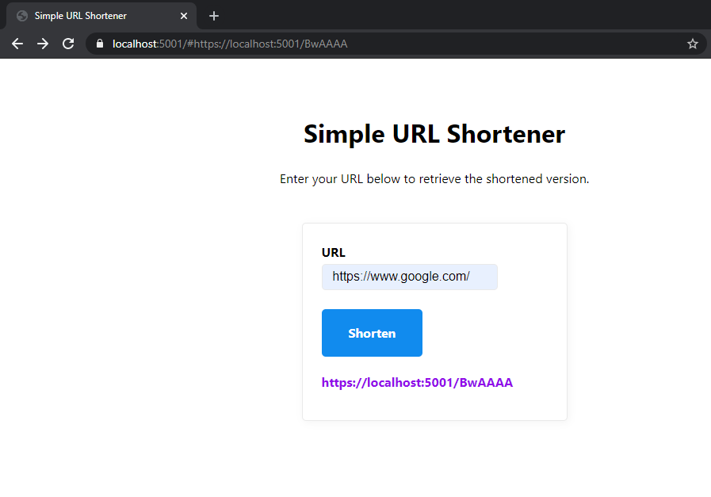

Fast Prototyping and Learning to Code
Take a moment to think of your preferred way to learn a new language, framework, or skill. Most likely, there is a certain amount of value that you only get when learning by doing.
I had an interesting transition into development. I already knew a bit about how to code, but I had never had a programming job. At the time, I was working for a company where the dev department was willing to give me a chance, so they sent me an assignment. It was essentially a small file upload application, which I knew I could do.
The problem was that it had to be done in C#, and I had never used C# or .NET before. I had a couple nights to finish, but that had to be juggled around my current job. I tried on my own, failed, looked up docs, tried again, and shortly got to the point where I was writing code and trying to figure out the actual problem. I spent time searching for the right way to structure a class, run a build, and package up a functional project.
I got the job!
Fast forward, months later after I have been onboarded and gotten acquainted with some of the smaller dev tasks, I was sent to ‘training’. There were dozens of us in a large classroom watching PowerPoint slides, listening to a lecture on proper syntax, and being given a list of ‘patterns’ to follow when writing our code.
It could not have been more unhelpful.
Sure, at some point during the class we were told we could write code, but overall we probably spent about three-quarters of our time listening rather than practicing.
I learned incredibly more in a couple frantic nights writing my file uploader than I did in 80 hours of carefully scripted classroom training.
Building a quick, useful app is an unbelievably useful tool when learning to code. Not only do you get to learn about the concepts employed in the app, you get to see results extremely quickly. There is a fantastic feedback loop that takes place when you get to see results.
In this tutorial we are going to focus on a fast prototype for a relatively simple service: a URL shortener.
Getting your Environment Ready
For this tutorial we have a couple tools that will be necessary.
- .NET SDK
- Note: This tutorial uses some features from .NET 5, which is a Release Candidate as of this writing. 
- VS Code
- C# Extension for VS Code
Building a URL Shortener
The plan today is to build a prototype URL shortener. While doing this we are going to explore and learn about a few concepts of .NET 5:
- Setting up our project
- Getting a basic webserver running requests
- Serving some data using endpoint routing
- Persisting our data in a simple no-frills database
Note: At this point I should emphasize that this is tutorial code and probably not ready for your full-scale production app. If you really just need a URL shortener there are many self-hosted options from which you can choose.
Setting up the Project
Our first step is to get our basic project files in place. Let’s make a directory for our project and create a few files.
|
|
Within this directory we are going to create two files:
- UrlShortener.csproj
- Program.cs
The contents of the csproj file will be very simple:
|
|
This file tells .NET that we are going to be targeting .NET 5.0 and that we are going to use the Microsoft.NET.Sdk.Web SDK. This is basically the flavor of .NET that we plan on using. This might feel a bit opaque at first, but at its core this is really just a console application.
You can prove it to yourself just by adding two lines to Program.cs.
Program.cs
|
|
And then running it with the dotnet command:
|
|
Running a Webserver
Now that we have a basic project set up and we can run code, our next step is to get a quick webserver up and running. This will let us respond to requests and start iterating on our solution.
Program.cs
|
|
This setup is doing a few things for us:
- It imports the necessary namespaces (think modules in JavaScript or Python) (see
usingstatments) that we need to start serving HTTP requests. - It adds endpoint routing to our application’s services.
- It instructs our application to use endpoint routing to serve requests
- It sets up a single route at our site’s root
"/"to return the text “Hello, World!”.
We can now use the dotnet run command and visit our site in a browser to see some successful HTTP requests!
|
|

Serving a Simple HTML Interface
For this project, we only need a few components to properly interact with our URL shortener.
- A simple HTML interface served at our site root (
"/") - An HTTP POST endpoint that allows us to request a short link (we will use
"/shorten") - A fallback HTTP endpoint that redirects all other requests to (for example
"/bL92qf"->https://www.google.com/")
To serve the HTML page we are going to take our existing “Hello, World” route and map to to a single file. First, we will add our index.html to the project. This can be in the same directory as Program.cs.
index.html
|
|
You will notice that we are just building a very basic form that will send a POST request to the "/shorten" route with a single field named url. We will have to add a little JavaScript later when we actually want to display our shortened link but for now this will suffice.
Note: You may notice a this stylesheet reference <link rel="stylesheet" href="https://unpkg.com/mvp.css"> at the top. This is a package called mvp.css by Andy Brewer and we are going to use it to give us some basic styling so we can focus on our code.
Then in our application we can instruct our endpoint to serve this file.
Program.cs
|
|
We can now run the app again, go to our browser and see our base interface.

Time to Shorten Some Links!
Now that we have a basic interface, we can focus a bit more on our link shortening solution. For this we are going to create a new file in our directory and call is ShortLink.cs. Here we will define a new class which will hold some data and functionality for our links.
ShortLink.cs
|
|
Now we will use our ShortLink class to iterate on our endpoints and generate some fake URLs.
Program.cs - Add this to the using section
|
|
Program.cs - Modify your UseEndpoints call
|
|
Program.cs - Add to the end after await host.RunAsync()
|
|
There is a bit to unpack here, so let’s go through it piece-by-piece.
- We add an endpoint that receives a POST request to the
"/shorten"path. This will accept the form input that we send fromindex.html - We map the endpoint to a method called
HandleShortenUrl. - In the
HandleShortenUrlmethod:- We do some basic validation to ensure that we are getting HTML form data and that the form contains our
urldata in the request. If we do not get this information, we just write an HTTP error to the browser. - We retrieve the URL value and use the built-in
Uri.TryCreatemethod to validate that it parses into a usable URL. If this fails, we once again send an HTTP error to the browser. - Create an instance of our
ShortLinkclass and use theGetUrlChunk()method to construct our shortened link and write it back to the browser. We are hard-coding anIdfor now so that we can test.
- We do some basic validation to ensure that we are getting HTML form data and that the form contains our
At this point, we should be able to run another test. Run the project, enter a valid URL into your form and you should see the URL in your response.
Test your form

Your test response

Congrats! You are successfully processing requests and returning data to your user. Next we will persist our generated short links to a database.
Persisting Your Short Links
Up to this point we have avoided adding dependencies to our project. For this section we have to change that by adding a database. We are going to use LiteDB, a simple, lightweight NoSQL database that will let us easily persist our short links to a file so they can be reitreved later.
Adding LiteDB to Your Project
When just using a text editor and not a full IDE, generally the easiest way to add a package is via the command line. Run the following command when in your project directory:
|
|
Functionally, this just edits your csproj file to add a Package Reference. Another option is to add the line to the project file yourself:
UrlShortener.csproj
|
|
Now we can utilize LiteDB to persist our short links and serve them to users.
Persisting Data to LiteDB
We can now modify our Program.cs file to utilize LiteDB. To do this, the first thing we have to do is add LiteDB to our available services.
Program.cs
|
|
This enables us to ask for the ILiteDatabase object in our request methods. ASP.NET will hold onto services for us and delivers them to us later in our program’s execution. We can now go into our HandleShortenUrl method and use this service to insert our link.
Program.cs - Your HandleShortenUrl method
|
|
Now that we have registered our ILiteDatabase service, HandleShortenUrl is able to retrieve it using context.RequestServices.GetService<ILiteDatabase>(). From here we use the easy LiteDB API to get a ShortLink collection and Insert() it into our database. Finally, we use the same URL generation from before and send it back down to the browser.
Note: You may notice this reference to BsonAutoId.Int32. This simply tells LiteDB that this collection will use regular Integers for the Id field.
The last step to make this a ‘complete product’ (as in, redirect users to our short links) is to add a Fallback Route which will catch every other visitor to our app and serve up the expanded link.
We are now going to add another route method to our Program.cs file.
Program.cs - Add to using section
|
|
Program.cs - Add to UseEndpoints() Call
|
|
Program.cs - Add After HandleShortenUrl
|
|
In this block we are taking a few steps:
- We set a default path where we will send people if we do not locate a short link for that path.
- We parse our the path using data from
context.Request.Path. We convert it to a string withToUriComponent()and thenTrim('/')to remove any extra slashes (the request will always come in with one initial slash). - We parse the URL back into an integer id using our
ShortLink.GetId()method. - We find that id in the LiteDB collection.
- We redirect to that URL if it exists, or to ‘/’ if nothing was located.
When you run the app and visit a short link, you should redirect to the expanded version of the link.
Final Touches to Improve the Experience
Right now we are still just showing a plain-text url when someone requests a short link. Just a few small changes can allow us to provide a much cleaner user experience while keeping our small prototype form factor. First, we will modify our "/shorten" handler to redirect our user back to index.html with the shortened link. We will then modify index.html to display the link.
Program.cs - Bottom of HandleShortenUrl Method
|
|
That’s it for Program.cs, we just replace the context.Response.WriteAsync() with context.Response.Redirect and we set the redirect URL to our root page with URL hash (#). Now with just a little bit of JavaScript we can add that URL to our page.
Index.html at the bottom of your <form>
|
|
Index.html right before the </body> tag
|
|
Now you can do your final run and test!

Quick Review and What’s Next
I hope you enjoyed writing a quick prototype URL Shortener! We explored a few concepts in this post, and hopefully you learned a bit about how to write a minimal prototype with ASP.NET and .NET 5.
If you learned from creating this prototype, I would encourage your to experiment on your own and start filling in new features or refactoring it to a more ‘production-ready’ app. Here are a few suggestions based upon things you might want to learn:
- Refactor the app to use the ASP.NET MVC (Model-View-Controller) pattern so that business logic and dependencies are better managed.
- Refactor the app to use a remote database like MongoDB or SQL Server.
- Right now putting the same URL twice will result in two separate short links. Maybe enhance the link creation logic to avoid duplicate URLs?
If you would be interested in a post that goes through any of these ideas, please Let me know!
You can also check out the full code for this solution on github.